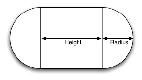

A capsule collider is two half-spheres joined together by a cylinder.
Properties
| Property: | Function: |
|---|---|
| Pointer to the PhysicMaterial used how this collider interacts with others. | |
| If enabled, this collider is used for triggering events, and is ignored by the physics system. | |
| The radius of the collider. | |
| The total height of the capsule. | |
| The position of the collider in the object's local space. |
Details
|  |
Colliders attach themselves to a rigidbody either in the same object as themseleves, or above them in the transform hierarchy. This is called attached. If there is no rigidbody above them, they are considered world colliders and will move with the object they are a part of.
World Colliders do not collide with each other. For two objects to collide, one of them must have a Rigid Body attached to it.
Triggers
If a collider is a trigger (has the IsTrigger property checked), whenever it is involved in a collision, a CollisionEvent is sent out to objects attached to it. Triggers do not deflect other physical objects.
Be aware that for two triggers to collide, one of them must be attached to a rigid body. For a trigger to collide with a collider, one of them must be attached to a rigid body.
Hints
-
The colliders do their best to match the scale of an object. If you have a non-uniform scale (a scale which is different in each direction), only the Mesh collider can match completely. You can look at the gizmos in the sceneview to see how Unity has matched.